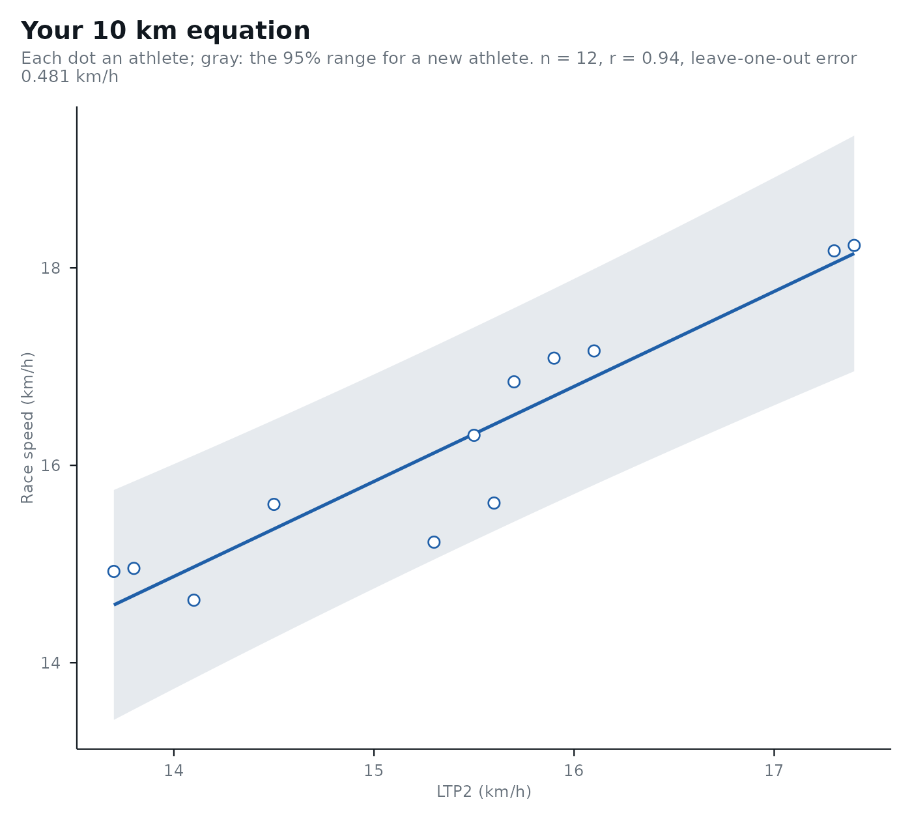

Fits the relationship between a threshold and race performance on your own athletes, for any threshold, sport and
test protocol, so that predict_performance() can use it for new tests. This is the most valid way to predict
performance from a step test: the published equations only apply to tests run like those of their studies, while
yours applies to your protocol, your analyzer and your athletes.
Usage
calibrate_performance(
data,
threshold,
performance,
method,
sport = "running",
distance = NULL,
event = NULL,
protocol = NULL
)
# S3 method for class 'lactate_calibration'
autoplot(object, ...)Arguments
- data
A data frame with one row per athlete.
- threshold
The column of
datawith the threshold, in the intensity unit of the sport.- performance
The column of
datawith the race time (s) whendistanceis given, or the mean race intensity otherwise.- method
The lactater method the thresholds come from (e.g.
"LTP2"), read from new tests inpredict_performance().- sport
"cycling","running","rowing"or"swimming", as inlactate_threshold().- distance
The race distance in meters, when
performanceis a time. Not for cycling.- event
A name for the race. Defaults to the distance (e.g.
"10 km"), or"Performance".- protocol
A short description of your test protocol and population, printed with every prediction.
- object
The result of
calibrate_performance().- ...
Not used.
Value
a lactate_calibration tibble with one row: the equation (intercept, slope), its residual SD
(sigma), n, the correlation r, the leave-one-out prediction error (loo_error), and what
predict_performance() needs. Plot it with autoplot().
Details
Give one row per athlete: the threshold from lactate_threshold() and the result of a race run soon after the
test (e.g. within 2 months, as in Roecker et al., 1998). With distance, performance is the race time in seconds
and is converted to the mean race intensity of the sport (speed in km/h for running, m/s for swimming, and power
in W for rowing, with the Concept2 relation watts = 2.80 / pace^3, pace in s/m); without it, performance is
already a mean intensity (e.g. time-trial power in W). The equation is a straight line, intensity = intercept + slope * threshold, as in the published equations. Use the same protocol for the new tests as for the athletes it
was fitted on, and more athletes make a narrower, more stable range.
Examples
## thresholds and 10 km times of 12 runners from your lab (simulated here)
set.seed(1)
lab <- data.frame(ltp2 = round(rnorm(12, 15, 1.5), 1))
lab$time_10km <- round(10000 / ((0.5 + 1.02 * lab$ltp2 + rnorm(12, 0, 0.4)) / 3.6))
own <- calibrate_performance(
lab, "ltp2", "time_10km", method = "LTP2", sport = "running", distance = 10000,
protocol = "3-min stages, +1 km/h, 1% grade, earlobe"
)
own
#> # Performance equation: 10 km (running): intensity = 1.4 + 0.962 x LTP2, in
#> # km/h
#> # Fit: n = 12, r = 0.94, leave-one-out prediction error 0.481
#> # km/h
#> # Protocol: 3-min stages, +1 km/h, 1% grade, earlobe
#> event sport distance method intercept slope sigma n mean sd low
#> <chr> <chr> <dbl> <chr> <dbl> <dbl> <dbl> <int> <dbl> <dbl> <dbl>
#> 1 10 km running 10000 LTP2 1.40 0.962 0.465 12 15.4 1.22 13.7
#> # ℹ 10 more variables: high <dbl>, r <dbl>, loo_error <dbl>, step_low <dbl>,
#> # step_high <dbl>, stage_minutes <dbl>, site <chr>, grade <dbl>,
#> # source <chr>, protocol <chr>
autoplot(own)
